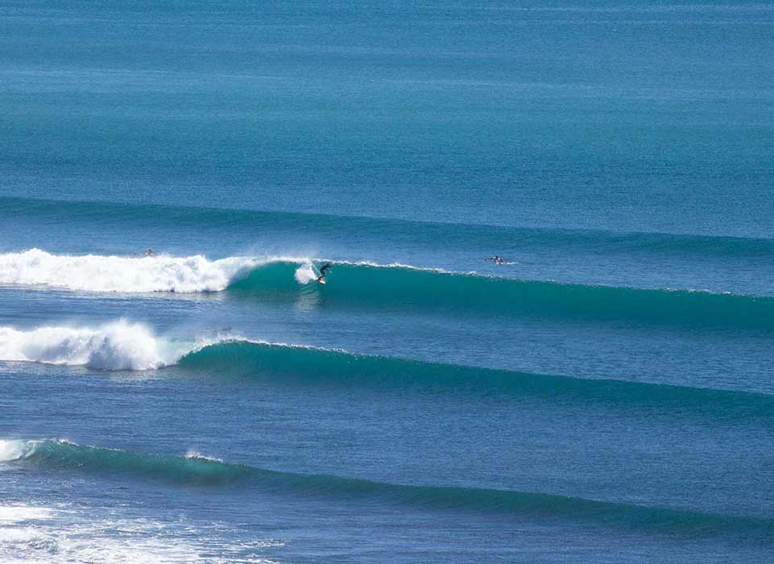

Swell waves are long, smooth waves that form when wind-generated waves travel across the open ocean, becoming organized and regular. They are characterized by their long wavelength, uniform shape, and consistent rhythm, traveling long distances from their origin. As they move away from the wind's influence, they become less chaotic and maintain a gentle rise and fall. Swell waves can travel across entire ocean basins and are typically less powerful than the choppy waves near the shore. These waves are crucial for surfing, as they offer predictable intervals, and they also help with navigation and energy transfer across the ocean, impacting water temperatures and marine ecosystems.
SWELL WAVES
